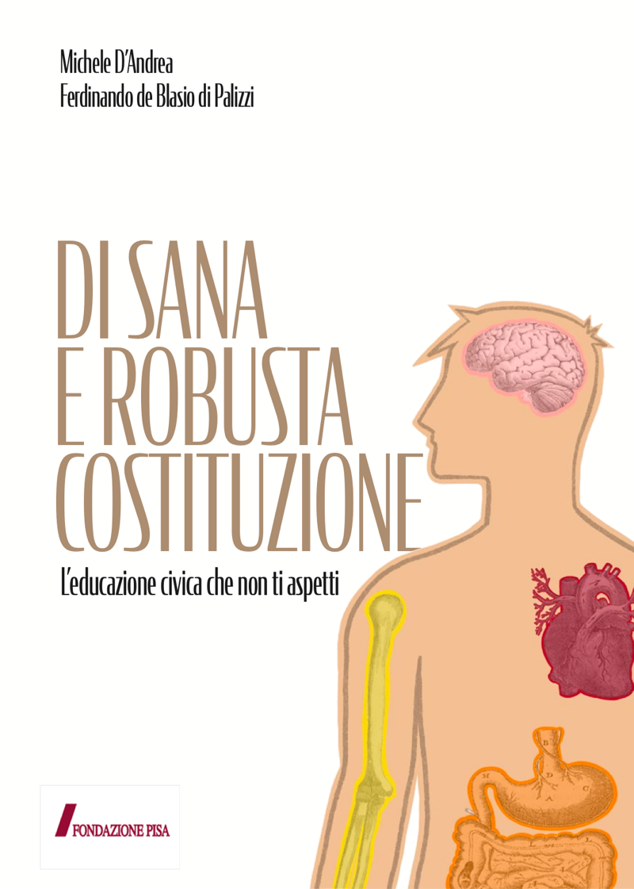

Il libro
L'educazione civica che non ti aspetti. Lo stesso viaggio nel corpo umano dello spettacolo, da sfogliare in classe e a casa.

Un libro che si apre volentieri
Gli alunni di solito ricevono la Costituzione come un muto repertorio di articoli. Questo libro la accompagna con un racconto illustrato: ogni organo del corpo diventa un'istituzione, ogni illustrazione un modo per ricordarla.
Il testo è composto con il carattere EasyReading, pensato per l'alta leggibilità, e si può leggere da soli o in classe con l'insegnante.
- Titolo
- Di sana e robusta Costituzione
- Sottotitolo
- L'educazione civica che non ti aspetti
- Autori
- Michele D'Andrea, Ferdinando de Blasio di Palizzi
- Illustrazioni
- Maurizio Dondi
- Carattere
- EasyReading, ad alta leggibilità
Come è fatto
- Parte ICi vuole un fisico bestiale
Il corpo dello Stato, organo per organo: lo scheletro, il cuore, il cervello, gli arti, il sistema immunitario, la psiche, l'intestino. Ogni capitolo indica gli articoli della Costituzione da leggere.
- Parte IINoi e gli altri
I segni particolari che rendono riconoscibile uno Stato, dalla bandiera all'inno, e il posto dell'Italia in Europa.
- Parte IIIDa 1 a 139
Il testo integrale della Costituzione, a portata di mano durante la lettura.
Per i docenti
Il libro riprende i temi dello spettacolo e dà agli insegnanti gli strumenti per affrontarli in classe, con lo stesso linguaggio e le stesse immagini. Chi ha visto lo spettacolo ritrova gli organi e le metafore, chi non l'ha visto può usare il libro da solo.
Le scuole possono ordinare più copie e abbinarle a una data dello spettacolo.
Porta il libro in classe
Scrivici la data che hai in mente e di cosa dispone la scuola. Ti rispondiamo con disponibilità e requisiti tecnici.